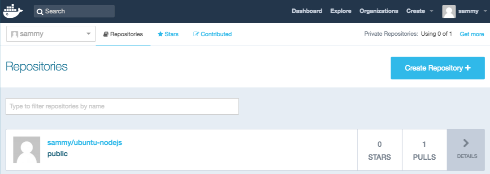

Docker — это приложение, упрощающее процесс управления процессами приложения в контейнерах. Контейнеры позволяют запускать приложения в процессах с изолированными ресурсами. Они похожи на виртуальные машины, но более портативные, более эффективно расходуют ресурсы и в большей степени зависят от операционной системы хоста.
Подробное описание различных компонентов контейнера Docker см. в статье Экосистема Docker: знакомство с базовыми компонентами.
Это руководство поможет установить и использовать Docker Community Edition (CE) в Debian 9. Вы самостоятельно установите Docker, поработаете с контейнерами и изображениями, а также подготовите образ репозитория Docker.
Для выполнения этого руководства вам потребуется следующее:
Пакет установки Docker, доступный в официальном репозитории Debian, может представлять собой не самую последнюю версию. Чтобы точно использовать самую актуальную версию, мы будем устанавливать Docker из официального репозитория Docker. Для этого мы добавим новый источник пакета, ключ GPG от Docker, чтобы гарантировать загрузку рабочих файлов, а затем установим пакет.
Первым делом обновите существующий список пакетов:
Затем установите несколько необходимых пакетов, которые позволяют apt использовать пакеты через HTTPS:
Добавьте ключ GPG для официального репозитория Docker в вашу систему:
Добавьте репозиторий Docker в источники APT:
Потом обновите базу данных пакетов и добавьте в нее пакеты Docker из недавно добавленного репозитория:
Убедитесь, что установка будет выполняться из репозитория Docker, а не из репозитория Debian по умолчанию:
Вы должны получить следующий вывод, хотя номер версии Docker может отличаться:
Output of apt-cache policy docker-ce
docker-ce:
Installed: (none)
Candidate: 18.06.1~ce~3-0~debian
Version table:
18.06.1~ce~3-0~debian 500
500 https://download.docker.com/linux/debian stretch/stable amd64 Packages
Обратите внимание, что docker-ce не установлен, но является кандидатом на установку из репозитория Docker для Debian 9 (версия Stretch).
Установите Docker:
Docker должен быть установлен, демон-процесс запущен, а для процесса активирован запуск при загрузке. Проверьте, что он запущен:
Вывод должен выглядеть примерно следующим образом, указывая, что служба активна и запущена:
Output● docker.service - Docker Application Container Engine
Loaded: loaded (/lib/systemd/system/docker.service; enabled; vendor preset: enabled)
Active: active (running) since Thu 2018-07-05 15:08:39 UTC; 2min 55s ago
Docs: https://docs.docker.com
Main PID: 21319 (dockerd)
CGroup: /system.slice/docker.service
├─21319 /usr/bin/dockerd -H fd://
└─21326 docker-containerd --config /var/run/docker/containerd/containerd.toml
После установки Docker у вас будет доступ не только к службе Docker (демон-процесс), но и к утилите командной строки docker или клиенту Docker. Мы узнаем, как использовать команду docker позже в этом обучающем руководстве.
Шаг 2 — Настройка команды Docker без sudo (необязательно)
По умолчанию команда docker может быть запущена только пользователем root или пользователем из группы docker, которая автоматически создается при установке Docker. Если вы попытаетесь запустить команду docker без префикса sudo или с помощью пользователя, который не находится в группе docker, то получите следующий вывод:
Outputdocker: Cannot connect to the Docker daemon. Is the docker daemon running on this host?.
See 'docker run --help'.
Если вы не хотите каждый раз вводить sudo при запуске команды docker, добавьте свое имя пользователя в группу docker:
Чтобы применить добавление нового члена группы, выйдите и войдите на сервер или введите следующее:
Вы должны будете ввести пароль вашего пользователя, чтобы продолжить.
Проверьте, что ваш пользователь добавлен в группу docker, введя следующее:
Outputsammy sudo docker
Если вам нужно добавить пользователя в группу docker, для которой вы не выполнили вход, объявите имя пользователя явно, используя следующую команду:
В дальнейшем в статье подразумевается, что вы запускаете команду docker от имени пользователя в группе docker. В обратном случае вам необходимо добавлять к командам префикс sudo.
Давайте перейдем к знакомству с командой docker.
Шаг 3 — Использование команды Docker
Использование docker подразумевает передачу ему цепочки опций и команд, за которыми следуют аргументы. Синтаксис имеет следующую форму:
Чтобы просмотреть все доступные субкоманды, введите:
Для 18-й версии Docker полный список субкоманд выглядит следующим образом:
Output
attach Attach local standard input, output, and error streams to a running container
build Build an image from a Dockerfile
commit Create a new image from a container's changes
cp Copy files/folders between a container and the local filesystem
create Create a new container
diff Inspect changes to files or directories on a container's filesystem
events Get real time events from the server
exec Run a command in a running container
export Export a container's filesystem as a tar archive
history Show the history of an image
images List images
import Import the contents from a tarball to create a filesystem image
info Display system-wide information
inspect Return low-level information on Docker objects
kill Kill one or more running containers
load Load an image from a tar archive or STDIN
login Log in to a Docker registry
logout Log out from a Docker registry
logs Fetch the logs of a container
pause Pause all processes within one or more containers
port List port mappings or a specific mapping for the container
ps List containers
pull Pull an image or a repository from a registry
push Push an image or a repository to a registry
rename Rename a container
restart Restart one or more containers
rm Remove one or more containers
rmi Remove one or more images
run Run a command in a new container
save Save one or more images to a tar archive (streamed to STDOUT by default)
search Search the Docker Hub for images
start Start one or more stopped containers
stats Display a live stream of container(s) resource usage statistics
stop Stop one or more running containers
tag Create a tag TARGET_IMAGE that refers to SOURCE_IMAGE
top Display the running processes of a container
unpause Unpause all processes within one or more containers
update Update configuration of one or more containers
version Show the Docker version information
wait Block until one or more containers stop, then print their exit codes
Чтобы просмотреть параметры, доступные для конкретной команды, введите:
Чтобы просмотреть общесистемную информацию о Docker, введите следующее:
Давайте изучим некоторые из этих команд. Сейчас мы начнем работать с образами.
Шаг 4 — Работа с образами Docker
Контейнеры Docker получают из образов Docker. По умолчанию Docker загружает эти образы из Docker Hub, реестр Docker, контролируемые Docker, т.е. компанией, реализующей проект Docker. Любой может размещать свои образы Docker на Docker Hun, поэтому большинство приложений и дистрибутивов Linux, которые вам потребуется, хранят там свои образы.
Чтобы проверить, можно ли получить доступ к образам из Docker Hub и загрузить их, введите следующую команду:
Данный вывод говорит о том, что Docker работает корректно:
OutputUnable to find image 'hello-world:latest' locally
latest: Pulling from library/hello-world
9db2ca6ccae0: Pull complete
Digest: sha256:4b8ff392a12ed9ea17784bd3c9a8b1fa3299cac44aca35a85c90c5e3c7afacdc
Status: Downloaded newer image for hello-world:latest
Hello from Docker!
This message shows that your installation appears to be working correctly.
...
Docker первоначально не смог найти локальный образ hello-world, поэтому он загрузил образ из Docker Hub, который является репозиторием по умолчанию. После того как образ был загружен, Docker создал контейнер из образа, а приложение внутри контейнера было исполнено, отобразив сообщение.
Вы можете выполнять поиск доступных на Docker Hub с помощью команды docker с субкомандой search. Например, чтобы найти образ Ubuntu, введите:
Скрипт пробежится по Docker Hub и вернет список всех образов с именами, совпадающими со строкой запроса. В данном случае вывод будет выглядеть примерно следующим образом:
OutputNAME DESCRIPTION STARS OFFICIAL AUTOMATED
ubuntu Ubuntu is a Debian-based Linux operating sys… 8320 [OK]
dorowu/ubuntu-desktop-lxde-vnc Ubuntu with openssh-server and NoVNC 214 [OK]
rastasheep/ubuntu-sshd Dockerized SSH service, built on top of offi… 170 [OK]
consol/ubuntu-xfce-vnc Ubuntu container with "headless" VNC session… 128 [OK]
ansible/ubuntu14.04-ansible Ubuntu 14.04 LTS with ansible 95 [OK]
ubuntu-upstart Upstart is an event-based replacement for th… 88 [OK]
neurodebian NeuroDebian provides neuroscience research s… 53 [OK]
1and1internet/ubuntu-16-nginx-php-phpmyadmin-mysql-5 ubuntu-16-nginx-php-phpmyadmin-mysql-5 43 [OK]
ubuntu-debootstrap debootstrap --variant=minbase --components=m… 39 [OK]
nuagebec/ubuntu Simple always updated Ubuntu docker images w… 23 [OK]
tutum/ubuntu Simple Ubuntu docker images with SSH access 18
i386/ubuntu Ubuntu is a Debian-based Linux operating sys… 13
1and1internet/ubuntu-16-apache-php-7.0 ubuntu-16-apache-php-7.0 12 [OK]
ppc64le/ubuntu Ubuntu is a Debian-based Linux operating sys… 12
eclipse/ubuntu_jdk8 Ubuntu, JDK8, Maven 3, git, curl, nmap, mc, … 6 [OK]
darksheer/ubuntu Base Ubuntu Image -- Updated hourly 4 [OK]
codenvy/ubuntu_jdk8 Ubuntu, JDK8, Maven 3, git, curl, nmap, mc, … 4 [OK]
1and1internet/ubuntu-16-nginx-php-5.6-wordpress-4 ubuntu-16-nginx-php-5.6-wordpress-4 3 [OK]
pivotaldata/ubuntu A quick freshening-up of the base Ubuntu doc… 2
1and1internet/ubuntu-16-sshd ubuntu-16-sshd 1 [OK]
ossobv/ubuntu Custom ubuntu image from scratch (based on o… 0
smartentry/ubuntu ubuntu with smartentry 0 [OK]
1and1internet/ubuntu-16-healthcheck ubuntu-16-healthcheck 0 [OK]
pivotaldata/ubuntu-gpdb-dev Ubuntu images for GPDB development 0
paasmule/bosh-tools-ubuntu Ubuntu based bosh-cli 0 [OK]
...
В столбце OFFICIAL OK указывает на образ, созданный и поддерживаемый компанией, реализующей проект. После того как вы определили образ, который хотели бы использовать, вы можете загрузить его на свой компьютер с помощью субкоманды pull.
Запустите следующую команду, чтобы загрузить официальный образ ubuntu на свой компьютер:
Вывод должен выглядеть следующим образом:
OutputUsing default tag: latest
latest: Pulling from library/ubuntu
6b98dfc16071: Pull complete
4001a1209541: Pull complete
6319fc68c576: Pull complete
b24603670dc3: Pull complete
97f170c87c6f: Pull complete
Digest: sha256:5f4bdc3467537cbbe563e80db2c3ec95d548a9145d64453b06939c4592d67b6d
Status: Downloaded newer image for ubuntu:latest
После того как образ будет загружен, вы сможете запустить контейнер с помощью загруженного образа с помощью субкоманды run. Как вы уже видели на примере hello-world, если образ не был загружен, когда docker выполняется с субкомандой run, клиент Docker сначала загружает образ, а затем запускает контейнер с этим образом.
Чтобы просмотреть образы, которые были загружены на ваш компьютер, введите:
Вывод должен выглядеть примерно следующим образом:
OutputREPOSITORY TAG IMAGE ID CREATED SIZE
ubuntu latest 16508e5c265d 13 days ago 84.1MB
hello-world latest 2cb0d9787c4d 7 weeks ago 1.85kB
Как вы увидите далее в этом обучающем руководстве, образы, которые вы используете для запуска контейнеров, можно изменить и использовать для создания новых образов, которые затем могут быть загружены (помещены) на Docker Hub или другие реестры Docker.
Давайте более подробно рассмотрим, как запускаются контейнеры.
Шаг 5 — Запуск контейнеров Docker
Контейнер hello-world, который вы запустили на предыдущем шаге, служит примером контейнера, который запускается и завершает работу после отправки тестового сообщения. Контейнеры могут быть гораздо более полезными, чем в примере выше, а также могут быть интерактивными. В конечном счете, они очень похожи на виртуальные машины, но более бережно расходуют ресурсы.
В качестве примера мы запустим контейнер с самым последним образом образ Ubuntu. Сочетание переключателей -i и -t предоставляет вам доступ к интерактивной командной оболочке внутри контейнера:
Необходимо изменить приглашение к вводу команды, чтобы отразить тот факт, что вы работаете внутри контейнера, и должны иметь следующую форму:
Outputroot@d9b100f2f636:/#
Обратите внимание на идентификатор контейнер в запросе команды. В данном примере это d9b100f2f636. Вам потребуется этот идентификатор для определения контейнера, когда вы захотите его удалить.
Теперь вы можете запустить любую команду внутри контейнера. Например, сейчас мы обновим базу данных пакетов внутри контейнера. Вам не потребуется начинать любую команду с sudo, потому что вы работаете внутри контейнера как root-пользователь:
После этого вы можете установите любое приложение внутри контейнера. Давайте установим Node.js:
Эта команда устанавливает Node.js внутри контейнера из официального репозитория Ubuntu. После завершения установки проверьте, что Node.js был установлен успешно:
Вы увидите номер версии, отображаемый в терминале:
Outputv8.10.0
Любые изменения, которые вы вносите внутри контейнера, применяются только к контейнеру.
Чтобы выйти из контейнера, введите exit.
Далее мы рассмотрим управление контейнерами в нашей системе.
Шаг 6 — Управление контейнерами Docker
После использования Docker в течение определенного времени, у вас будет много активных (запущенных) и неактивных контейнеров на компьютере. Чтобы просмотреть активные, используйте следующую команду:
Вывод будет выглядеть примерно следующим образом:
OutputCONTAINER ID IMAGE COMMAND CREATED
В этом обучающем руководстве вы запустили два контейнера: один из образа hello-world и другой из образа ubuntu. Оба контейнера больше не запущены, но все еще существует в вашей системе.
Чтобы просмотреть все контейнеры — активные и неактивные, воспользуйтесь командой docker ps с переключателем -a:
Вывод будет выглядеть следующим образом:
d9b100f2f636 ubuntu "/bin/bash" About an hour ago Exited (0) 8 minutes ago sharp_volhard
01c950718166 hello-world "/hello" About an hour ago Exited (0) About an hour ago festive_williams
Чтобы просмотреть последний созданный вами контейнер, передайте переключатель -l:
Чтобы запустить остановленный контейнер, воспользуйтесь docker start с идентификатором контейнера или именем контейнера. Давайте запустим контейнер на базе Ubuntu с идентификатором d9b100f2f636:
Контейнер будет запущен, а вы сможете использовать docker ps, чтобы просматривать его статус:
CONTAINER ID IMAGE COMMAND CREATED STATUS PORTS NAMES
d9b100f2f636 ubuntu "/bin/bash" About an hour ago Up 8 seconds sharp_volhard
Чтобы остановить запущенный контейнер, используйте docker stop с идентификатором или именем контейнера. На этот раз мы будем использовать имя, которое Docker привязал к контейнеру, т.е. sharp_volhard:
После того как вы решили, что вам больше не потребуется контейнер, удалите его с помощью команды docker rm, снова добавив идентификатор контейнера или его имя. Используйте команду docker ps -a, чтобы найти идентификатор или имя контейнера, связанного с образом hello-world, и удалить его.
Вы можете запустить новый контейнер и присвоить ему имя с помощью переключателя --name. Вы также можете использовать переключатель --rm, чтобы создать контейнер, который удаляется после остановки. Изучите команду docker run help, чтобы получить больше информации об этих и прочих опциях.
Контейнеры можно превратить в образы, которые вы можете использовать для создания новых контейнеров. Давайте посмотрим, как это работает.
Шаг 7 — Внесение изменений в контейнер для образа Docker
После запуска образа Docker вы можете создавать, изменять и удалять файлы так же, как и с помощью виртуальной машины. Эти изменения будут применяться только к данному контейнеру. Вы можете запускать и останавливать его, но после того как вы уничтожите его с помощью команды docker rm, изменения будут утрачены навсегда.
Данный раздел показывает, как сохранить состояние контейнера в виде нового образа Docker.
После установки Node.js внутри контейнера Ubuntu у вас появился контейнер, запускающий образ, но этот контейнер отличается от образа, который вы использовали для его создания. Но позже вам может снова потребоваться этот контейнер Node.js в качестве основы для новых образов.
Затем внесите изменения в новый экземпляр образа Docker с помощью следующей команды.
Переключатель -m используется в качестве сообщения о внесении изменений, которое помогает вам и остальным узнать, какие изменения вы внесли, в то время как -a используется для указания автора. container_id — это тот самый идентификатор, который вы отмечали ранее в этом руководстве, когда запускали интерактивную сессию Docker. Если вы не создавали дополнительные репозитории на Docker Hub, repository, как правило, является вашим именем пользователя на Docker Hub.
Например, для пользователя sammy с идентификатором контейнера d9b100f2f2f6 команда будет выглядеть следующим образом:
Когда вы вносите образ, новый образ сохраняется локально на компьютере. Позже в этом обучающем руководстве вы узнаете, как добавить образ в реестр Docker, например, на Docker Hub, чтобы другие могли получить к нему доступ.
Список образов Docker теперь будет содержать новый образ, а также старый образ, из которого он будет получен:
Вывод будет выглядеть следующим образом:
OutputREPOSITORY TAG IMAGE ID CREATED SIZE
sammy/ubuntu-nodejs latest 7c1f35226ca6 7 seconds ago 179MB
ubuntu latest 113a43faa138 4 weeks ago 81.2MB
hello-world latest e38bc07ac18e 2 months ago 1.85kB
В данном примере ubuntu-nodejs является новым образом, который был получен из образа ubuntu на Docker Hub. Разница в размере отражает внесенные изменения. В данном примере изменение состояло в том, что NodeJS был установлен. В следующий раз, когда вам потребуется запустить контейнер, использующий Ubuntu с предустановленным NodeJS, вы сможете использовать новый образ.
Вы также можете создавать образы из Dockerfile, что позволяет автоматизировать установку программного обеспечения в новом образе. Однако это не относится к предмету данного обучающего руководства.
Теперь мы поделимся новым образом с другими, чтобы они могли создавать из него контейнеры.
Шаг 8 — Загрузка образов Docker в репозиторий Docker
Следующим логическим шагом после создания нового образа из существующего является предоставление доступа к этому образу нескольким вашим друзьям или всему миру на Docker Hub или в другом реестре Docker, к которому вы имели доступ. Чтобы добавить образ на Docker Hub или любой другой реестр Docker, у вас должна быть там учетная запись.
Данный раздел посвящен добавлению образа Docker на Docker Hub. Чтобы узнать, как создать свой собственный частный реестр Docker, ознакомьтесь со статьей Настройка частного реестра Docker на Ubuntu 14.04.
Чтобы загрузить свой образ, выполните вход в Docker Hub.
Вам будет предложено использовать для аутентификации пароль Docker Hub. Если вы указали правильный пароль, аутентификации должна быть выполнена успешно.
Примечание. Если ваше имя пользователя в реестре Docker отличается от локального имени пользователя, которое вы использовали при создании образа, вам потребуется пометить ваш образ именем пользователя в реестре. Для примера, приведенного на последнем шаге, вам необходимо ввести следующую команду:
Затем вы можете загрузить свой образ с помощью следующей команды:
Чтобы загрузить образ ubuntu-nodejs в репозиторий sammy, необходимо использовать следующую команду:
Данный процесс может занять некоторое время, необходимое на загрузку образов, но после завершения вывод будет выглядеть следующим образом:
OutputThe push refers to a repository [docker.io/sammy/ubuntu-nodejs]
e3fbbfb44187: Pushed
5f70bf18a086: Pushed
a3b5c80a4eba: Pushed
7f18b442972b: Pushed
3ce512daaf78: Pushed
7aae4540b42d: Pushed
...
После добавления образа в реестр он должен отображаться в панели вашей учетной записи, как на изображении ниже.

Если при попытке добавления возникает подобная ошибка, вы, скорее всего, не выполнили вход:
OutputThe push refers to a repository [docker.io/sammy/ubuntu-nodejs]
e3fbbfb44187: Preparing
5f70bf18a086: Preparing
a3b5c80a4eba: Preparing
7f18b442972b: Preparing
3ce512daaf78: Preparing
7aae4540b42d: Waiting
unauthorized: authentication required
Выполните вход с помощью команды docker login и повторите попытку загрузки. Проверьте, появился ли образ на вашей странице репозитория Docker Hub.
Теперь вы можете использовать docker pull sammy/ubuntu-nodejs, чтобы загрузить образ на новый компьютер и использовать его для запуска нового контейнера.
В этом обучающем руководстве вы установили Docker, поработали с образами и контейнерами, а также добавили измененный образ на Docker Hub. После знакомства с основами, вы можете переходить к другим обучающим руководствам Docker в сообществе.